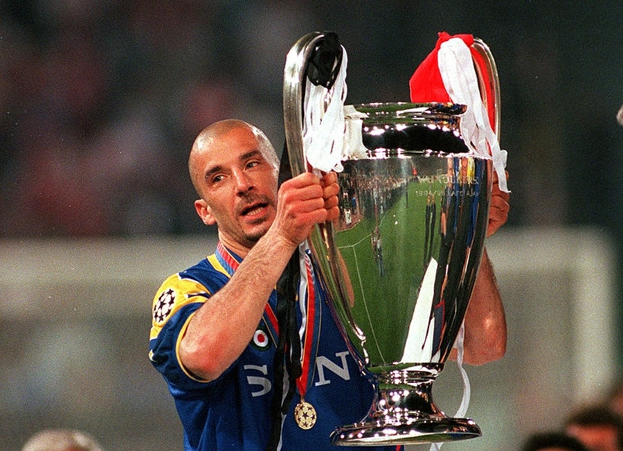

Джанлука ВИАЛЛИ
Виалли — «родоначальник» племени бритоголовых в футболе. Он первым из известных игроков добровольно расстался в начале 90-х годов со своей пышной курчавой шевелюрой, после чего мода на выбритые затылки охватила весь мир. При этом он так ни разу и не дал правдивого ответа на вопрос (а он задавался ему бесчисленное число раз), что сподвигло его на такой шаг В Ленина не верил Для «Сампдории» времена, когда за нее выступал Виалли, были поистине золотые, каких не было до него и какие, если и повторятся в будущем, то вряд ли сколь - нибудь скоро. Генуэзский клуб купил его, 20-летнего, у «Кремонезе» за сумму, эквивалентную 3 миллионам долларам. Это было по тем временам очень много, и все же, наверное, тогда мало кто предполагал, что в клуб приходит игрок, которому будет суждено стать его самой яркой звездой в истории.На рубеже 80-90-х годов «Сампдория» под руководством Вуядина Бошкова выросла в один из сильнейших клубов не только в Италии, но и в Европе. Достаточно сказать, что за 4 сезона она трижды доходила до еврокубковых финалов, один из них выиграв: в 1990-м у «Андерлехта» 2:0 (оба мяча в добавочное время забил Виалли), и в двух других, уступив одному и тому же сопернику — «Барселоне».
А апофеоз величия «Сампдории» пришелся на весну 1991 года, когда она в первый и последний раз выиграла скудетто. Самым счастливым днем в истории клуба стало 19 мая. Это был предпоследний тур, и «блю-черкьяти» в случае победы дома над «Лечче» становились недосягаемыми. Уже к 30-й минуте дело было сделано — 3:0. Третий мяч вколотил в сетку соперника Виалли. Это был его 19-й гол в чемпионате, и он вместе с золотой чемпионской медалью завоевал себе титул лучшего бомбардира. Роль лидера команды Джанлука делил с Роберто Манчини. Их нередко называли «близнецами». Естественно, речь не шла о внешнем сходстве, которого не было и в помине. Такое прозвище им дали как раз потому, что они были настолько разными, что походили на две половины одного целого — жесткий и сильный Виалли и нежный и артистичный Манчини. Они и в жизни были не разлей вода: постоянно ходили вместе и вместе посещали свой излюбленный ресторан подле стадиона «Марасси». Когда же дело доходило до холостяцких ночных вылазок (Виалли, кстати, холост и поныне), тут к ним присоединялся третий участник—Аттилио Ломбарде. Виалли вынес из «Сампдории» много всего — награды, славу, деньги. А еще он вынес оттуда... знание богатого русского фольклора. Благодаря, естественно, Алексею Михайличенко. Когда он приехал в 1991 году в составе сборной Италии в Москву играть отборочный матч Евро-92, он уже был превосходно подкован. Наши сограждане (журналисты и фанаты), которым довелось с ним пообщаться, дружно умилялись тем, как непринужденно Джанлука сыпал отборным русским матом. Буквально с трапа самолета он приветствовал встречающих сказанной по-русски фразой: «Привет, ...вашу мать!» Но дальше его языковые познания не простирались.